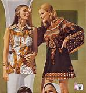
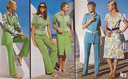

1970's Style

Style in the 1970's gave way to large prints as well as earthly colors and tones

Pastels and bright pops of color were also popular in the 1970's
Pastels and bright pops of color were also popular in the 1970's